CYP2C19 DDI Qualification¶
| Version | 2.0-OSP12.2 |
|---|---|
| Qualification Plan Release | https://github.com/Open-Systems-Pharmacology/Qualification-DDI-CYP2C19/releases/tag/v2.0 |
| OSP Version | 12.2 |
| Qualification Framework Version | 3.5 |
This qualification report is filed at:
https://github.com/Open-Systems-Pharmacology/OSP-Qualification-Reports
Table of Contents¶
- 1 Introduction
- 1.1 Objective
- 1.2 CYP2C19 DDI Network
- 2 Qualification of Use Case CYP2C19-mediated DDI
- 2.1 Perpetrator
- 2.2 Victim
- 3 Concentration-Time Profiles
- 3.1 Omeprazole - Moclobemide DDI
- 3.2 Omeprazole - Fluvoxamine DDI
- 3.3 S-Mephenytoin - Fluvoxamine DDI
- 3.4 Moclobemide - Omeprazole DDI
- 4 Conclusion
- 5 References
- 6 Appendix
- 6.1 Open Systems Pharmacology Suite (OSPS) Introduction
- 6.2 Mathematical Implementation of Drug-Drug Interactions
- 6.3 Automatic (re)-qualification workflow
- 7 Glossary
1 Introduction¶
1.1 Objective¶
This qualification report evaluates the developed PBPK drug-drug interactions (DDI) models network for the ability to perform simulations with the intended purpose to predict cytochrome P450 2C19 (CYP2C19)-mediated DDI.
To demonstrate the level of confidence, the predictive performance of the platform for this intended purpose is assessed via a network of PBPK models of selected index CYP2C19 DDI perpetrators, and respective sensitive CYP2C19 victim drugs and a comprehensive dataset from published clinical DDI studies. All PBPK models represent whole-body PBPK models, which allow dynamic DDI simulations in organs expressing CYP2C19.
The respective qualification plan to produce this qualification report is transparently documented and provided open-source (https://github.com/Open-Systems-Pharmacology/OSP-Qualification-Reports). The same applies for all presented PBPK models including evaluation reports on model building and evaluation of each model (https://github.com/Open-Systems-Pharmacology/OSP-PBPK-Model-Library).
Evaluation reports including descriptions on model building and detailed evaluations of the included models are documented separately (see Section 1.2).
Please refer to the Appendix to learn more details:
-
An overview over the Open Systems Pharmacology Suite is given in chapter Section 6.1
-
Section 6.2 shows the implementation of the underlying mathematical equations for drug-drug interactions in the OSP suite.
-
A detailed general description of the performed qualification workflow (qualification plan, qualification report, etc.) can be found in chapter Section 6.3.
1.2 CYP2C19 DDI Network¶
CYP2C19 is an important enzyme for the metabolism of about 10% of therapeutical drugs, including proton pump inhibitors (PPIs, e.g., omeprazole), antidepressants (e.g., imipramine), anticonvulsants (phenytoin, S-mephenytoin), hypnotics and sedatives (e.g., phenobarbital), antimalarial (proguanil), antiretroviral (nelfinavir), antifungal (voriconazole), and antiplatelet drugs (clopidogrel) (Goldstein 2001, Desta 2002). Genetic polymorphism exists for CYP2C19 expression, with approximately 3%–5% of European and 15%–20% of Asian populations being poor metabolizers with no CYP2C19 activity (Goldstein 2001, Bertilsson 1995). Based on the metabolic capacity of CYP2C19, individuals can be divided into four categories: extensive metabolizers (EMs) carrying normal alleles, intermediate metabolizers (IMs) carrying one defective allele, poor metabolizers (PMs) carrying two defective alleles, and ultra-rapid metabolizers (UMs) homozygous for alleles which increase the CYP2C19 expression or activity higher than in EMs. Well-known substrates of CYP2C19 are mephenytoin, omeprazole, and moclobemide.
Like other CYPs, CYP2C19 is subject to induction and/or inhibition by a number of compounds, which can result in significant drug interactions in clinical practice.
The U.S. Food and Drug Administration (FDA) lists several perpetrator and victim drugs of interactions in the CYP2C19 network (Goldstein 2001). For instance, omeprazole is a sensitive index substrate for CYP2C19, and fluvoxamine is listed as a strong clinical index inhibitor for CYP2C19 pathway.
To qualify the developed models for the prediction of the CYP2C19 DDI potential of new drugs, a set of verified PBPK models of index perpetrators and respective CYP2C19 DDI victim drugs is specified to set up a CYP2C19-mediated DDI modeling network.
The following perpetrator compounds were selected:
- Fluvoxamine (strong CYP2C19 inhibitor) Model snapshot and evaluation plan (release alt_v1.0): https://github.com/Open-Systems-Pharmacology/Fluvoxamine-Model/releases/tag/alt_v1.0
- Omeprazole (moderate CYP2C19 inhibitor) Model snapshot and evaluation plan (release v2.0): https://github.com/Open-Systems-Pharmacology/Omeprazole-Model/releases/tag/v2.0
- Moclobemide (moderate CYP2C19 inhibitor) Model snapshot and evaluation plan (release v2.0): https://github.com/Open-Systems-Pharmacology/Moclobemide-Model/releases/tag/v2.0
The following sensitive CYP2C19 substrates as victim drugs were selected:
- Omeprazole Model snapshot and evaluation plan (release v2.0): https://github.com/Open-Systems-Pharmacology/Omeprazole-Model/releases/tag/v2.0
- S-Mephenytoin Model snapshot and evaluation plan (release v2.0): https://github.com/Open-Systems-Pharmacology/S-Mephenytoin-Model/releases/tag/v2.0
- Moclobemide Model snapshot and evaluation plan (release v2.0): https://github.com/Open-Systems-Pharmacology/Moclobemide-Model/releases/tag/v2.0
The following interaction studies were predicted and used to qualify/optimize the final network:
-
Strong CYP2C19 inhibition
-
Fluvoxamine - omeprazole
- Fluvoxamine - S-Mephenytoin
- Moderate CYP2C19 inhibition
- Omeprazole – moclobemide
- Moclobemide - omeprazole
Figure 1 shows the specified and developed DDI modeling network of interacting perpetrator and victim drugs.
Figure 1: CYP2C19 DDI modeling network
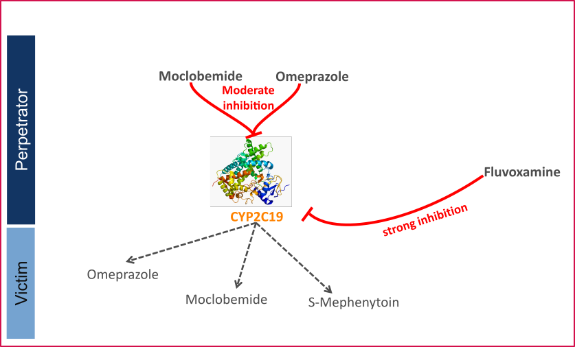
The Ki values used to predict the interactions are listed in Table 1.
| Inhibitor category | Inhibitor | Substrate | Ki | Reference |
|---|---|---|---|---|
| Strong CYP2C19 | Fluvoxamine | Omeprazole | 3.6 nM | Iga 2016 |
| S-Mephenytoin | 2.6 nM | Iga 2016 | ||
| Moderate CYP2C19 | Moclobemide | Omeprazole | 203.83 µM1 TDI 94.85 µM |
Fit |
| Omeprazole | Moclobemide | S-ome: 3.1 µM TDI 0.3 µM R-ome: 5.3 µM TDI 1.6 µM |
Liu 2005 Wu 2014 Liu 2005 Wu 2014 |
Table 1: Ki values used in CYP2C19 DDI network. 1Literature value = 204 µM
The published DDI studies between the respective perpetrators and victim drugs were simulated and compared to observed data. The following sections give an overview of the clinical studies being part of this qualification report.
1.2.1 Omeprazole - Moclobemide DDI¶
The omeprazole-moclobemide interaction was evaluated using clinical DDI studies listed in Table 2.
| Source | Route | Dose [mg] / Schedule * | Pop. | Sex | N | Form. | Comment |
|---|---|---|---|---|---|---|---|
| Cho 2002 | p.o | 20 | HV asian | - | - | capsule | EM +/-moclobemide |
| Cho 2002 | p.o | 20 | HV asian | - | - | capsule | PM +/-moclobemide |
Table 2: Literature sources of clinical concentration data of omeprazole used for DDI prediction qualification with moclobemide. -: respective information was not provided in the literature source; *:single dose unless otherwise specified; EM: extensive metabolizers; PM: poor metabolizers
A dynamical DDI simulation with moclobemide and omeprazole was conducted and compared to literature data. Both compounds act as CYP2C19 inhibitors and victims. The predefined typical Japanese subject (age = 30 y, weight = 61.87 kg, height = 168.99 cm, BMI = 21.67 kg/m2) was used with CYP3A4, CYP2C19, CYP2D6 and CYP1A2 expressions from RT PCR database in PK-Sim and adapted CYP2C19 expression in gut (see evaluation report of omeprazole for more details). Additional enzyme "FMO (other)" was added and expressed in liver only.
In Cho 2002, sixteen volunteers, of whom eight were extensive metabolizers (EM) and eight were poor metabolizers (PM) for CYP2C19, received oral doses of 40 mg omeprazole with or without 300 mg moclobemide co-administration.
The pharmacokinetic change of omeprazole, omeprazole sulphone and 5-hydroxyomeprazole concentrations were assessed to test for an interaction between omeprazole and moclobemide.
1.2.2 Omeprazole - Fluvoxamine DDI¶
The omeprazole-fluvoxamine interaction was evaluated using clinical DDI studies listed in Table 3.
| Source | Route | Dose [mg] / Schedule * | Pop. | Sex | N | Form. | Comment |
|---|---|---|---|---|---|---|---|
| Yasui-Furukori 2004 | p.o. | 40 | HV japanese | M - F | 6 | omepral | hmEM +/- fluvoxamine |
| Yasui-Furukori 2004 | p.o. | 40 | HV japanese | M - F | 6 | omepral | PM +/- fluvoxamine |
Table 3: Literature sources of clinical concentration data of omeprazole used for DDI prediction qualification with fluvoxamine. *:single dose unless otherwise specified; hmEM: homozygous extensive metabolizers; PM: poor metabolizers
A dynamical DDI simulation with fluvoxamine as CYP2C19 inhibitor and omeprazole as victim was conducted and compared to literature data. The predefined typical Japanese subject (age = 30 y, weight = 61.87 kg, height = 168.99 cm, BMI = 21.67 kg/m2) was used with CYP3A4, CYP2C19, CYP2D6 and CYP1A2 expression from RT PCR database in PK-Sim and adapted CYP2C19 expression in gut (see evaluation report of omeprazole for more details). Additional enzyme "FMO (other)" was added and expressed in liver only. The Ki value of 3.6 nmol/l for the inhibition of CYP2C19 by fluvoxamine was selected in agreement with literature data (Iga 2016).
In Yasui-Furukori 2004, eighteen volunteers, of whom six were homozygous extensive metabolizers (hmEMs), six were heterozygous EMs (htEMs) and six were poor metabolizers (PMs) for CYP2C19, received two six-day courses of either daily 50 mg fluvoxamine (split in 25 mg twice daily) or placebo in a randomized fashion with a single oral 40 mg dose of omeprazole on day six in both cases. Plasma concentrations of omeprazole and its metabolites, 5-hydroxyomeprazole, omeprazole sulphone, and fluvoxamine were monitored up to 8 h after the dosing.
1.2.3 S-Mephenytoin - Fluvoxamine DDI¶
The S-mephenytoin-fluvoxamine interaction was evaluated using clinical DDI studies listed in Table 4.
| Source | Route | Dose [mg]/ Schedule * | Pop. | Sex | N | Form. | Comment |
|---|---|---|---|---|---|---|---|
| Yao 2003 | p.o. | 100 mg s.d. | HV | m/f | 12 | - | S-mephenytoin, with and without Fluvoxamine MD of 37.5, 62.5 and 87.5 mg/day |
Table 4: Literature sources of clinical concentration data of S-mephenytoin used for DDI prediction qualification with fluvoxamine. -: respective information was not provided in the literature source; *:single dose unless otherwise specified
A dynamical DDI simulation with fluvoxamine was used to predict the effect of a strong CYP2C19 inhibitor on S-mephenytoin exposure. The predefined “Standard European Male for DDI” individual (age = 30 y, weight = 73 kg, height = 176 cm, BMI = 23.57 kg/m2) with adapted CYP2C19 expression in gut (see evaluation report of omeprazole for more details) was used. Ki value of 2.6 nmol/l for the inhibition of CYP2C19 was selected.
Predictions were compared to clinical results from Yao 2003, where the effect of different fluvoxamine doses in S-Mephenytoin was investigated. 100 mg S-mephenytoin were administered after 7 days of placebo or fluvoxamine treatment (27.5, 45.8, or 64.1 mg).
1.2.4 Moclobemide - Omeprazole DDI¶
The moclobemide-omeprazole interaction was evaluated using clinical DDI studies listed in Table 5.
| Source | Route | Dose [mg]/ Schedule * | Pop. | Sex | N | Form. | Comment |
|---|---|---|---|---|---|---|---|
| Yu 2001 | p.o | 300 s.d. | HV-Asian | m | 8 | tablet | EM +/- omeprazole |
Table 5: Literature sources of clinical concentration data of moclobemide used for DDI prediction qualification omeprazole. *:single dose unless otherwise specified; EM: extensive metabolizers
A dynamical DDI simulation with moclobemide and omeprazole was conducted and compared to literature data. Both compounds act as CYP2C19 inhibitors and victims. 300 mg moclobemide with or without a single dose of 40 mg omeprazole (racemate, i.e. 20 mg S-omeprazole and 20 mg R-omeprazole) was simulated. The predefined typical Japanese subject (age = 30 y, weight = 61.87 kg, height = 168.99 cm, BMI = 21.67 kg/m2) was used with CYP3A4, CYP2C19, CYP2D6 and CYP1A2 expressions from RT PCR database in PK-Sim and adapted CYP2C19 expression in gut (see evaluation report of omeprazole for more details). Additional enzyme "FMO (other)" was added and expressed in liver only.
2 Qualification of Use Case CYP2C19-mediated DDI¶
The following section shows the correlations between observed and model-predicted AUC and Cmax ratios, respectively.
Specifically, the PBPK model performance for the PK parameters AUC ratio (AUCR) and Cmax ratio (CMAXR) is assessed via:
-
predicted (Pred) vs. observed (Obs) plots
-
Pred/Obs vs. Obs plots
-
geometric mean fold error (GMFE):

-
number of AUCR and CMAXR falling within 2-fold error range and within the limits as suggested by Guest et al. 2011
-
detailed table of results for each study
In the plots,
-
the dotted lines denote 0.50–2.00 (2-fold) criterion,
-
the solid lines denote the limits as suggested by Guest et al. 2011,
-
the bold solid line denotes the unity line,
-
each color represents one combination of drugs
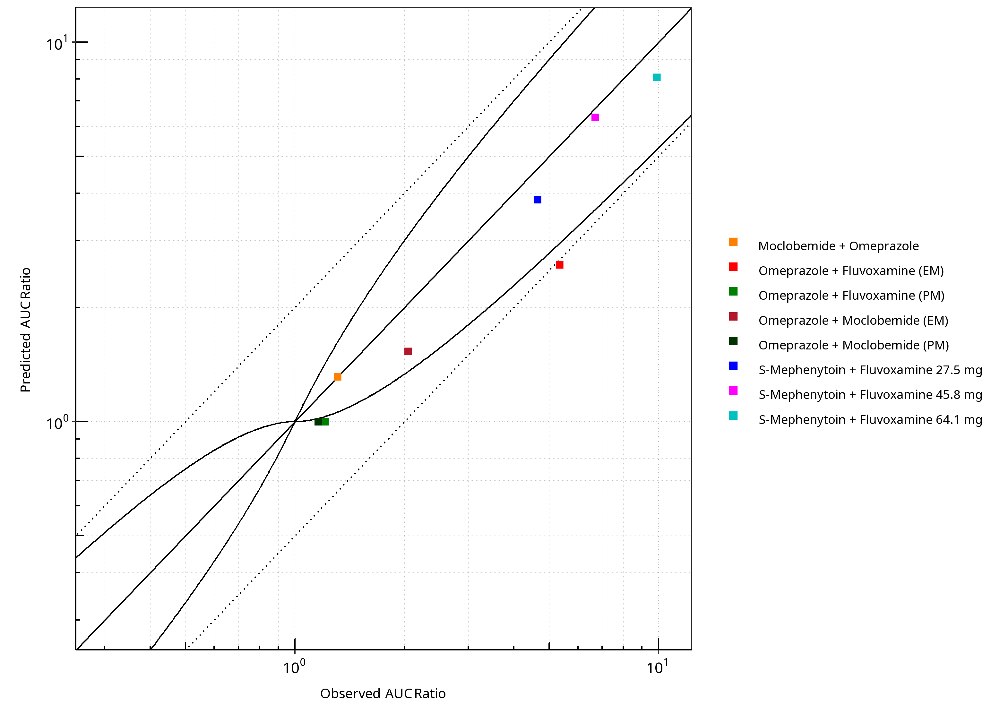
Figure 2-1: CYP2C19 DDI. Predicted vs. Observed AUC Ratio. (δ = 1 in Guest et al. formula)
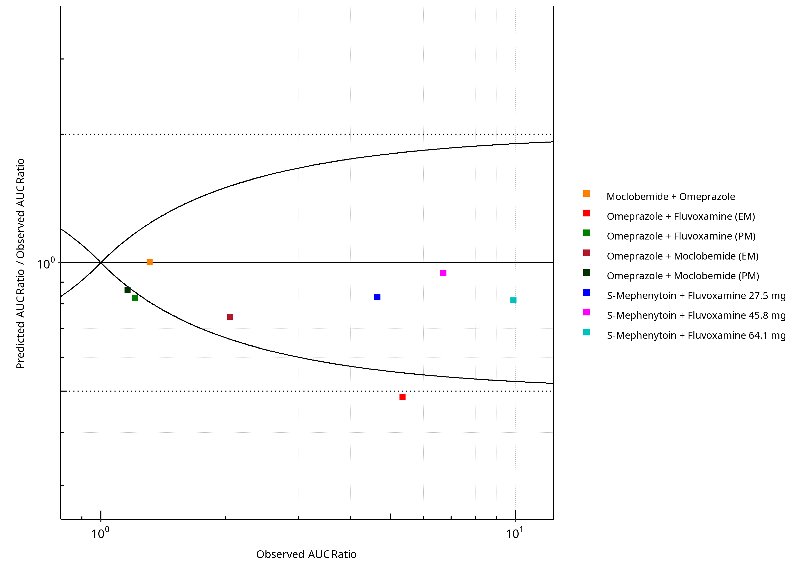
Figure 2-2: CYP2C19 DDI. Predicted/Observed vs. Observed AUC Ratio. (δ = 1 in Guest et al. formula)
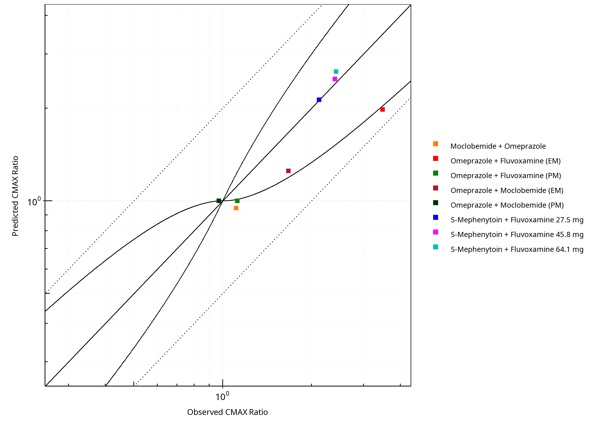
Figure 2-3: CYP2C19 DDI. Predicted vs. Observed CMAX Ratio. (δ = 1 in Guest et al. formula)
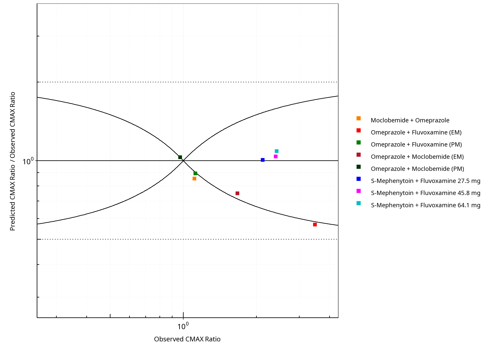
Figure 2-4: CYP2C19 DDI. Predicted/Observed vs. Observed CMAX Ratio. (δ = 1 in Guest et al. formula)
Table 2-1: GMFE for CYP2C19 DDI Ratio
| PK parameter | GMFE |
|---|---|
| AUC | 1.25 |
| CMAX | 1.17 |
Table 2-2: Summary table for CYP2C19 DDI - AUC Ratio. (δ = 1 in Guest et al. formula)
| AUC | Number | Ratio [%] |
|---|---|---|
| Points total | 8 | - |
| Points within Guest et al. | 5 | 62.50 |
| Points within 2 fold | 7 | 87.50 |
Table 2-3: Summary table for CYP2C19 DDI - CMAX Ratio. (δ = 1 in Guest et al. formula)
| CMAX | Number | Ratio [%] |
|---|---|---|
| Points total | 8 | - |
| Points within Guest et al. | 4 | 50 |
| Points within 2 fold | 8 | 100 |
Table 2-4: Summary table for CYP2C19 DDI
| DataID | Perpetrator | Victim | Predicted AUC Ratio | Observed AUC Ratio | Pred/Obs AUC Ratio | Predicted CMAX Ratio | Observed CMAX Ratio | Pred/Obs CMAX Ratio | Reference |
|---|---|---|---|---|---|---|---|---|---|
| 10027 | Omeprazole, 40 mg, PO, | Moclobemide , PO | 1.31 | 1.31 | 1.00 | 0.95 | 1.11 | 0.85 | Yu 2001 |
| 11048 | Moclobemide, 300 mg, PO, | Omeprazole, PO | 1.53 | 2.05 | 0.75 | 1.25 | 1.67 | 0.75 | Cho 2002 |
| 11049 | Moclobemide, 300 mg, PO, | Omeprazole, PO | 1.00 | 1.16 | 0.86 | 1.00 | 0.97 | 1.03 | Cho 2002 |
| 11050 | Fluvoxamine, 50 mg, PO, | Omeprazole, PO | 2.59 | 5.34 | 0.48 | 1.98 | 3.48 | 0.57 | Yasui-Furukori 2004 |
| 11052 | Fluvoxamine, 50 mg, PO, | Omeprazole, PO | 1.00 | 1.21 | 0.83 | 1.00 | 1.12 | 0.89 | Yasui-Furukori 2004 |
| 15001 | Fluvoxamine, 27.5 mg, PO, | S-Mephenytoin, PO | 3.85 | 4.64 | 0.83 | 2.14 | 2.12 | 1.01 | Yao 2003 |
| 15002 | Fluvoxamine, 45.8 mg, PO, | S-Mephenytoin, PO | 6.33 | 6.70 | 0.95 | 2.49 | 2.40 | 1.04 | Yao 2003 |
| 15003 | Fluvoxamine, 64.1 mg, PO, | S-Mephenytoin, PO | 8.07 | 9.89 | 0.82 | 2.63 | 2.42 | 1.09 | Yao 2003 |
2.1 Perpetrator¶
2.1.1 Fluvoxamine¶
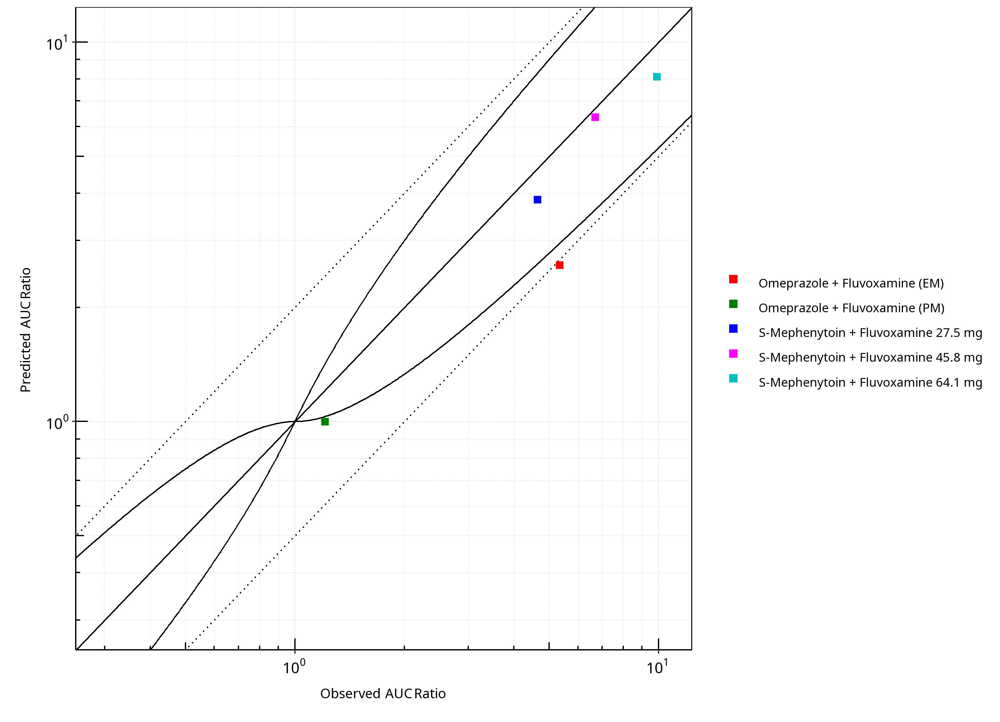
Figure 2-5: CYP2C19 DDI. Perpetrator: Fluvoxamine. Predicted vs. Observed AUC Ratio. (δ = 1 in Guest et al. formula)
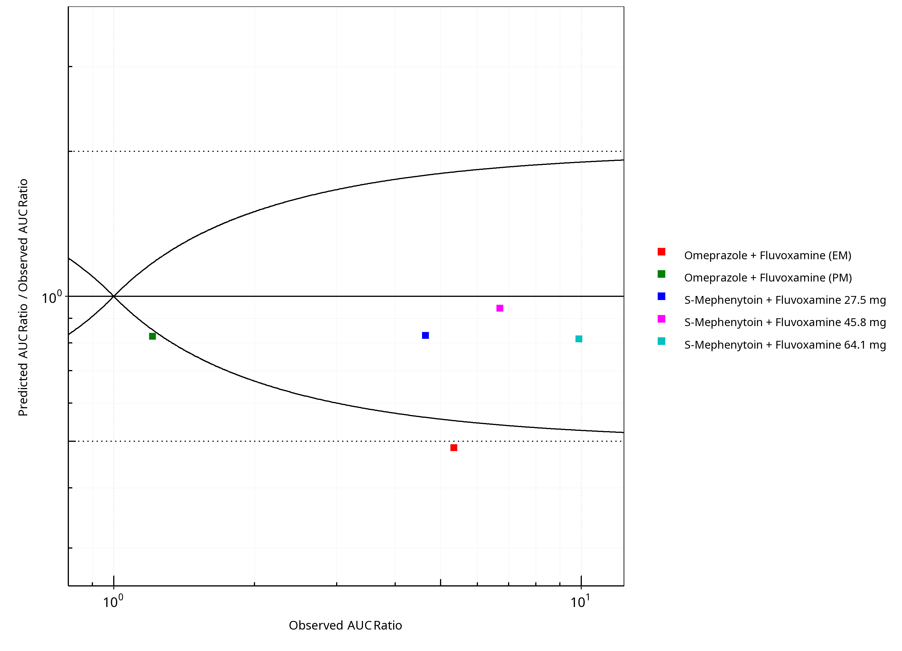
Figure 2-6: CYP2C19 DDI. Perpetrator: Fluvoxamine. Predicted/Observed vs. Observed AUC Ratio. (δ = 1 in Guest et al. formula)
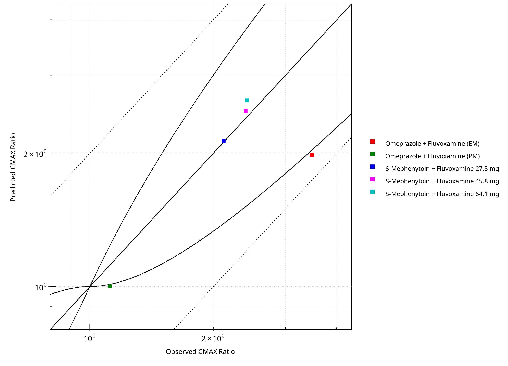
Figure 2-7: CYP2C19 DDI. Perpetrator: Fluvoxamine. Predicted vs. Observed CMAX Ratio. (δ = 1 in Guest et al. formula)
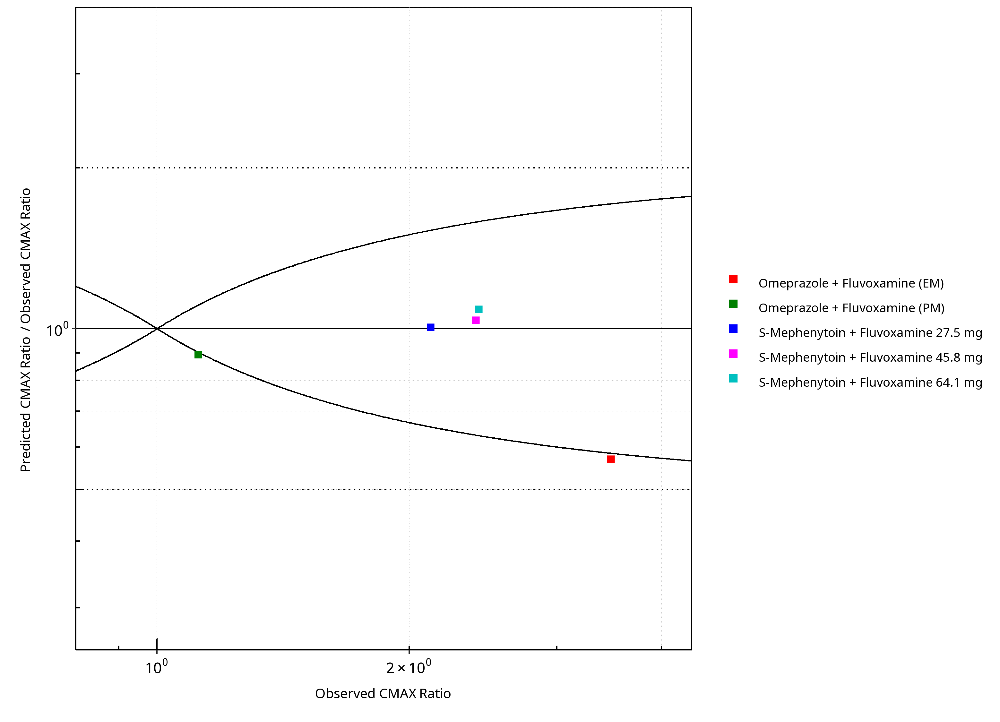
Figure 2-8: CYP2C19 DDI. Perpetrator: Fluvoxamine. Predicted/Observed vs. Observed CMAX Ratio. (δ = 1 in Guest et al. formula)
Table 2-5: GMFE for CYP2C19 DDI Ratio
| PK parameter | GMFE |
|---|---|
| AUC | 1.31 |
| CMAX | 1.17 |
Table 2-6: Summary table for CYP2C19 DDI - AUC Ratio. (δ = 1 in Guest et al. formula)
| AUC | Number | Ratio [%] |
|---|---|---|
| Points total | 5 | - |
| Points within Guest et al. | 3 | 60 |
| Points within 2 fold | 4 | 80 |
Table 2-7: Summary table for CYP2C19 DDI - CMAX Ratio. (δ = 1 in Guest et al. formula)
| CMAX | Number | Ratio [%] |
|---|---|---|
| Points total | 5 | - |
| Points within Guest et al. | 3 | 60 |
| Points within 2 fold | 5 | 100 |
2.1.2 Moclobemide¶
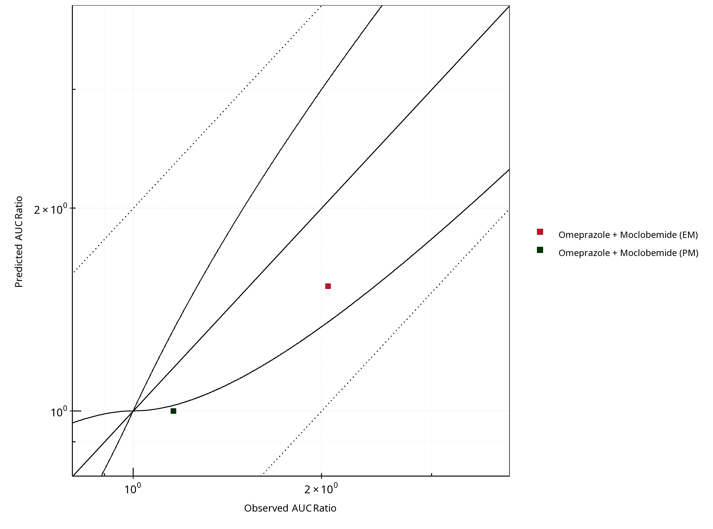
Figure 2-9: CYP2C19 DDI. Perpetrator: Moclobemide. Predicted vs. Observed AUC Ratio. (δ = 1 in Guest et al. formula)
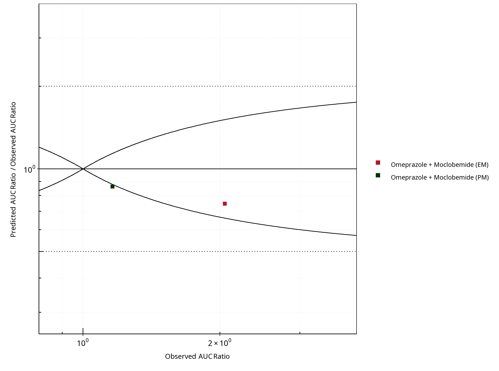
Figure 2-10: CYP2C19 DDI. Perpetrator: Moclobemide. Predicted/Observed vs. Observed AUC Ratio. (δ = 1 in Guest et al. formula)
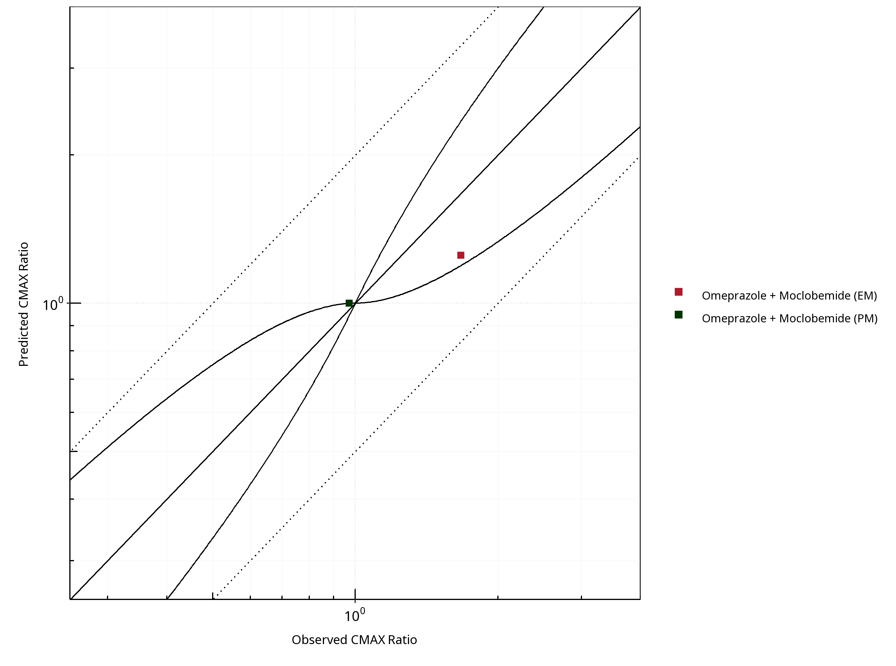
Figure 2-11: CYP2C19 DDI. Perpetrator: Moclobemide. Predicted vs. Observed CMAX Ratio. (δ = 1 in Guest et al. formula)
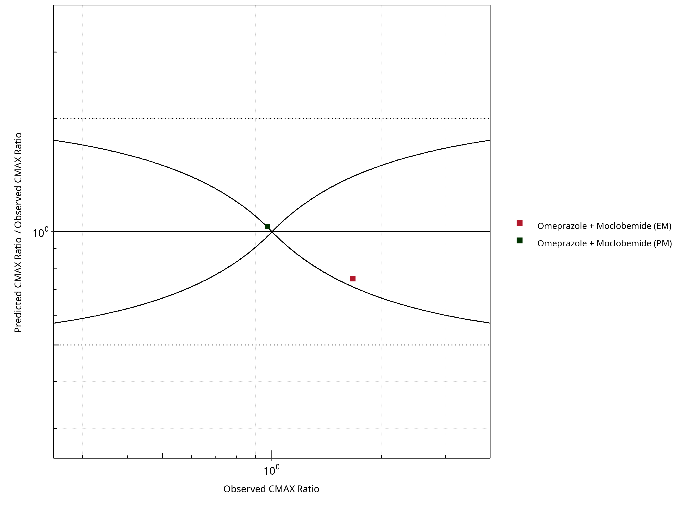
Figure 2-12: CYP2C19 DDI. Perpetrator: Moclobemide. Predicted/Observed vs. Observed CMAX Ratio. (δ = 1 in Guest et al. formula)
Table 2-8: GMFE for CYP2C19 DDI Ratio
| PK parameter | GMFE |
|---|---|
| AUC | 1.25 |
| CMAX | 1.17 |
Table 2-9: Summary table for CYP2C19 DDI - AUC Ratio. (δ = 1 in Guest et al. formula)
| AUC | Number | Ratio [%] |
|---|---|---|
| Points total | 2 | - |
| Points within Guest et al. | 1 | 50 |
| Points within 2 fold | 2 | 100 |
Table 2-10: Summary table for CYP2C19 DDI - CMAX Ratio. (δ = 1 in Guest et al. formula)
| CMAX | Number | Ratio [%] |
|---|---|---|
| Points total | 2 | - |
| Points within Guest et al. | 1 | 50 |
| Points within 2 fold | 2 | 100 |
2.1.3 Omeprazole¶

Figure 2-13: CYP2C19 DDI. Perpetrator: Omeprazole. Predicted vs. Observed AUC Ratio. (δ = 1 in Guest et al. formula)
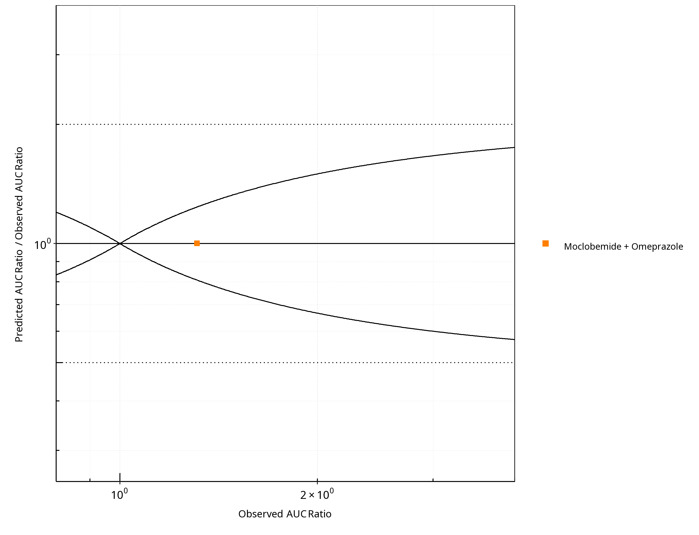
Figure 2-14: CYP2C19 DDI. Perpetrator: Omeprazole. Predicted/Observed vs. Observed AUC Ratio. (δ = 1 in Guest et al. formula)
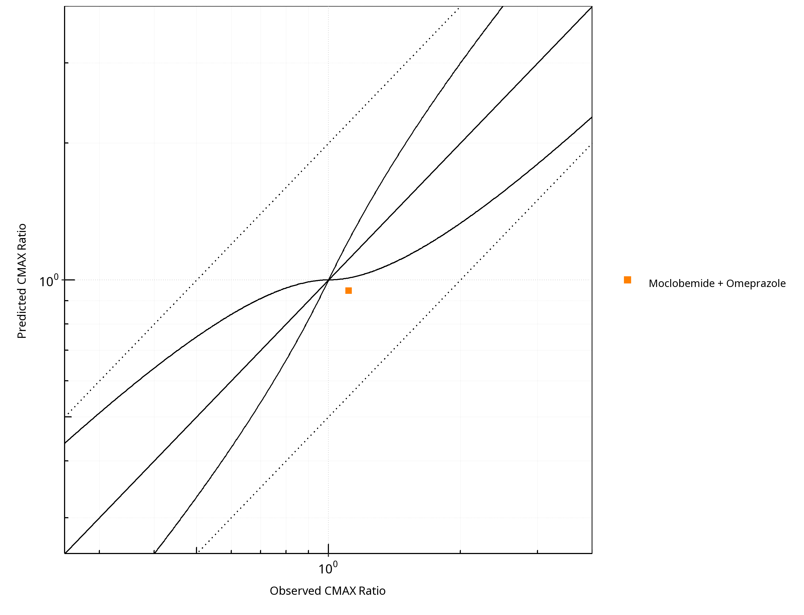
Figure 2-15: CYP2C19 DDI. Perpetrator: Omeprazole. Predicted vs. Observed CMAX Ratio. (δ = 1 in Guest et al. formula)

Figure 2-16: CYP2C19 DDI. Perpetrator: Omeprazole. Predicted/Observed vs. Observed CMAX Ratio. (δ = 1 in Guest et al. formula)
Table 2-11: GMFE for CYP2C19 DDI Ratio
| PK parameter | GMFE |
|---|---|
| AUC | 1.00 |
| CMAX | 1.17 |
Table 2-12: Summary table for CYP2C19 DDI - AUC Ratio. (δ = 1 in Guest et al. formula)
| AUC | Number | Ratio [%] |
|---|---|---|
| Points total | 1 | - |
| Points within Guest et al. | 1 | 100 |
| Points within 2 fold | 1 | 100 |
Table 2-13: Summary table for CYP2C19 DDI - CMAX Ratio. (δ = 1 in Guest et al. formula)
| CMAX | Number | Ratio [%] |
|---|---|---|
| Points total | 1 | - |
| Points within Guest et al. | 0 | 0 |
| Points within 2 fold | 1 | 100 |
2.2 Victim¶
2.2.1 Moclobemide ¶
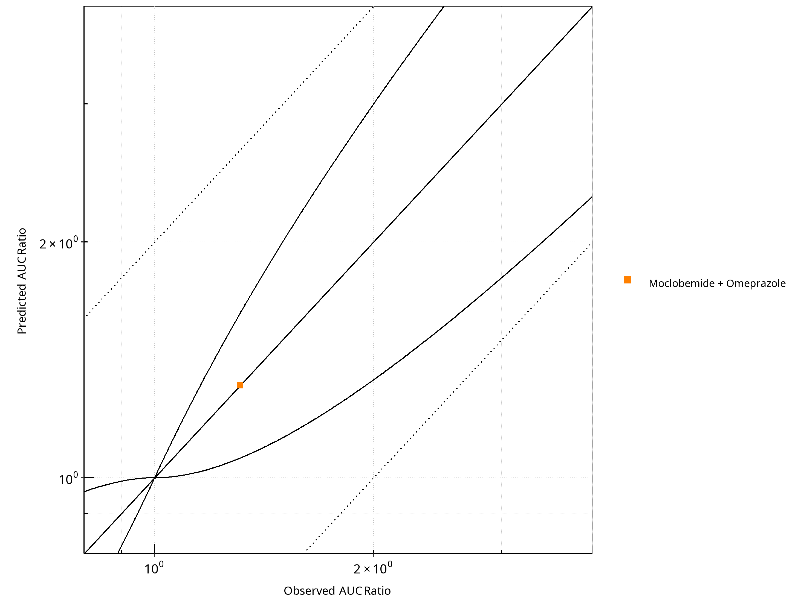
Figure 2-17: CYP2C19 DDI. Victim: Moclobemide . Predicted vs. Observed AUC Ratio. (δ = 1 in Guest et al. formula)

Figure 2-18: CYP2C19 DDI. Victim: Moclobemide . Predicted/Observed vs. Observed AUC Ratio. (δ = 1 in Guest et al. formula)

Figure 2-19: CYP2C19 DDI. Victim: Moclobemide . Predicted vs. Observed CMAX Ratio. (δ = 1 in Guest et al. formula)
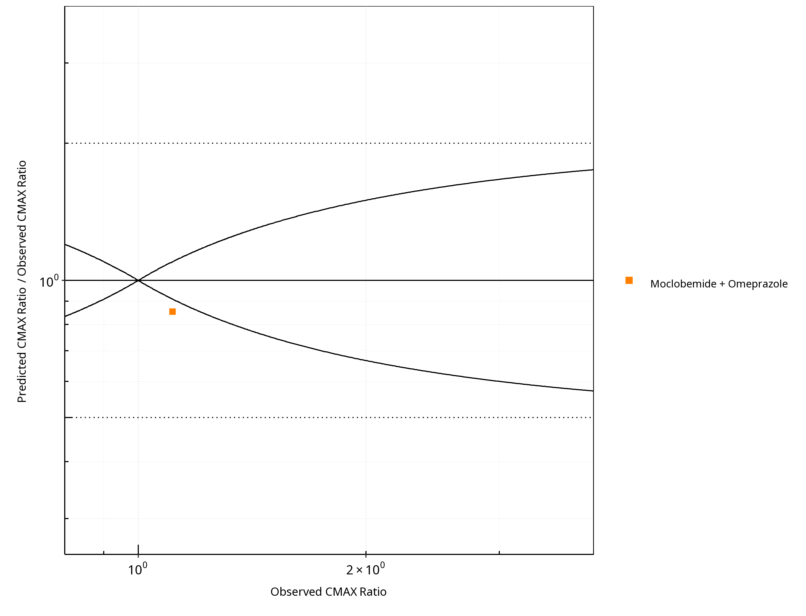
Figure 2-20: CYP2C19 DDI. Victim: Moclobemide . Predicted/Observed vs. Observed CMAX Ratio. (δ = 1 in Guest et al. formula)
Table 2-14: GMFE for CYP2C19 DDI Ratio
| PK parameter | GMFE |
|---|---|
| AUC | 1.00 |
| CMAX | 1.17 |
Table 2-15: Summary table for CYP2C19 DDI - AUC Ratio. (δ = 1 in Guest et al. formula)
| AUC | Number | Ratio [%] |
|---|---|---|
| Points total | 1 | - |
| Points within Guest et al. | 1 | 100 |
| Points within 2 fold | 1 | 100 |
Table 2-16: Summary table for CYP2C19 DDI - CMAX Ratio. (δ = 1 in Guest et al. formula)
| CMAX | Number | Ratio [%] |
|---|---|---|
| Points total | 1 | - |
| Points within Guest et al. | 0 | 0 |
| Points within 2 fold | 1 | 100 |
2.2.2 Omeprazole¶
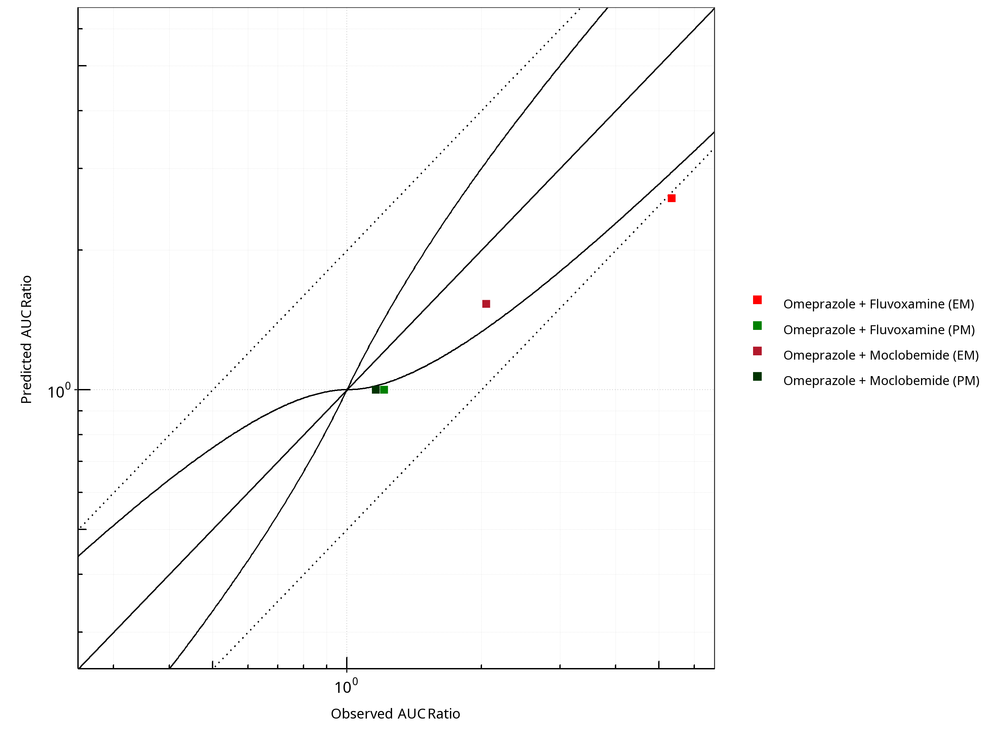
Figure 2-21: CYP2C19 DDI. Victim: Omeprazole. Predicted vs. Observed AUC Ratio. (δ = 1 in Guest et al. formula)
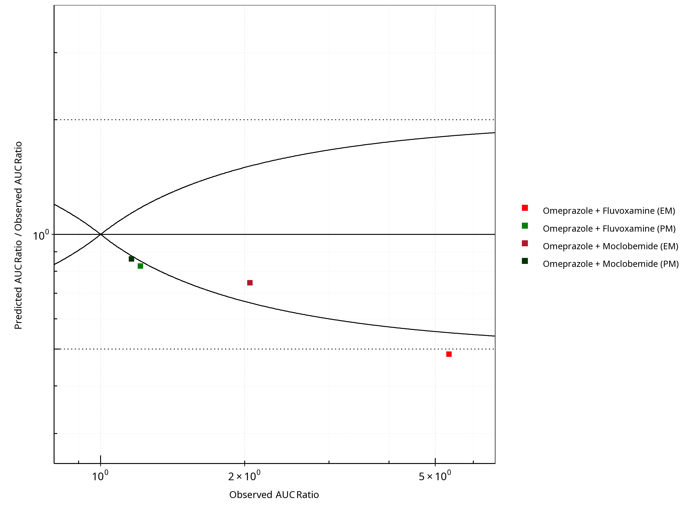
Figure 2-22: CYP2C19 DDI. Victim: Omeprazole. Predicted/Observed vs. Observed AUC Ratio. (δ = 1 in Guest et al. formula)
Figure 2-23: CYP2C19 DDI. Victim: Omeprazole. Predicted vs. Observed CMAX Ratio. (δ = 1 in Guest et al. formula)
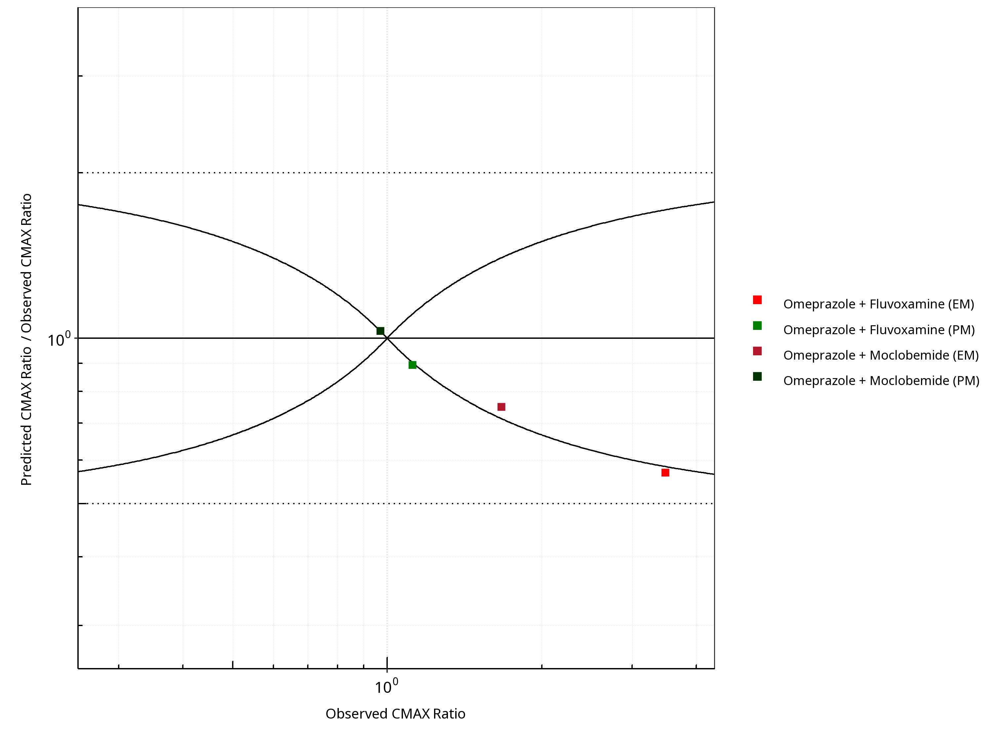
Figure 2-24: CYP2C19 DDI. Victim: Omeprazole. Predicted/Observed vs. Observed CMAX Ratio. (δ = 1 in Guest et al. formula)
Table 2-17: GMFE for CYP2C19 DDI Ratio
| PK parameter | GMFE |
|---|---|
| AUC | 1.40 |
| CMAX | 1.28 |
Table 2-18: Summary table for CYP2C19 DDI - AUC Ratio. (δ = 1 in Guest et al. formula)
| AUC | Number | Ratio [%] |
|---|---|---|
| Points total | 4 | - |
| Points within Guest et al. | 1 | 25 |
| Points within 2 fold | 3 | 75 |
Table 2-19: Summary table for CYP2C19 DDI - CMAX Ratio. (δ = 1 in Guest et al. formula)
| CMAX | Number | Ratio [%] |
|---|---|---|
| Points total | 4 | - |
| Points within Guest et al. | 1 | 25 |
| Points within 2 fold | 4 | 100 |
2.2.3 S-Mephenytoin¶
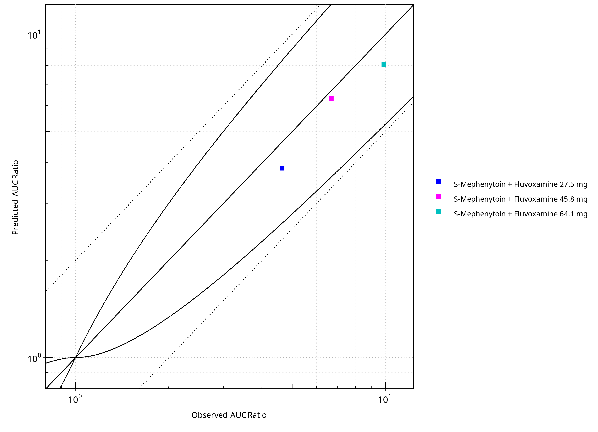
Figure 2-25: CYP2C19 DDI. Victim: S-Mephenytoin. Predicted vs. Observed AUC Ratio. (δ = 1 in Guest et al. formula)
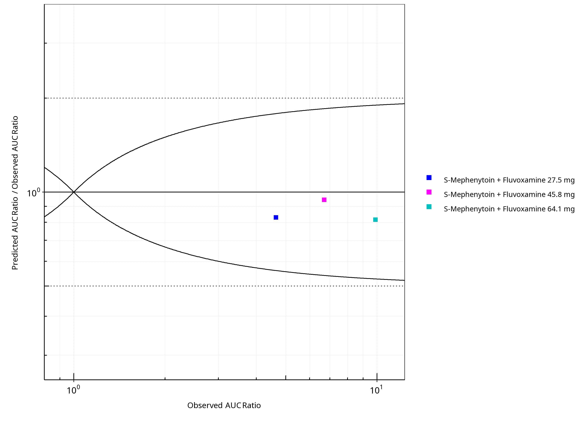
Figure 2-26: CYP2C19 DDI. Victim: S-Mephenytoin. Predicted/Observed vs. Observed AUC Ratio. (δ = 1 in Guest et al. formula)
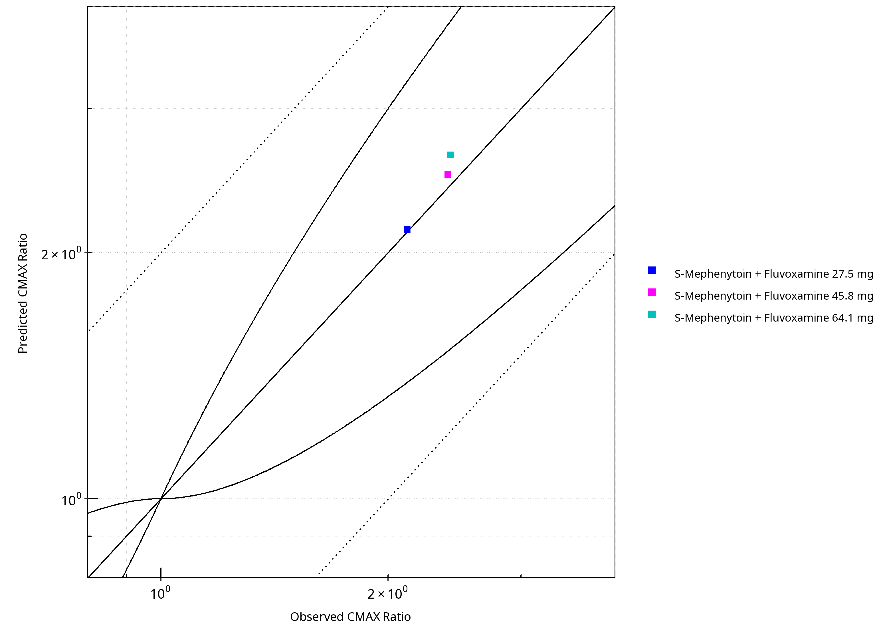
Figure 2-27: CYP2C19 DDI. Victim: S-Mephenytoin. Predicted vs. Observed CMAX Ratio. (δ = 1 in Guest et al. formula)
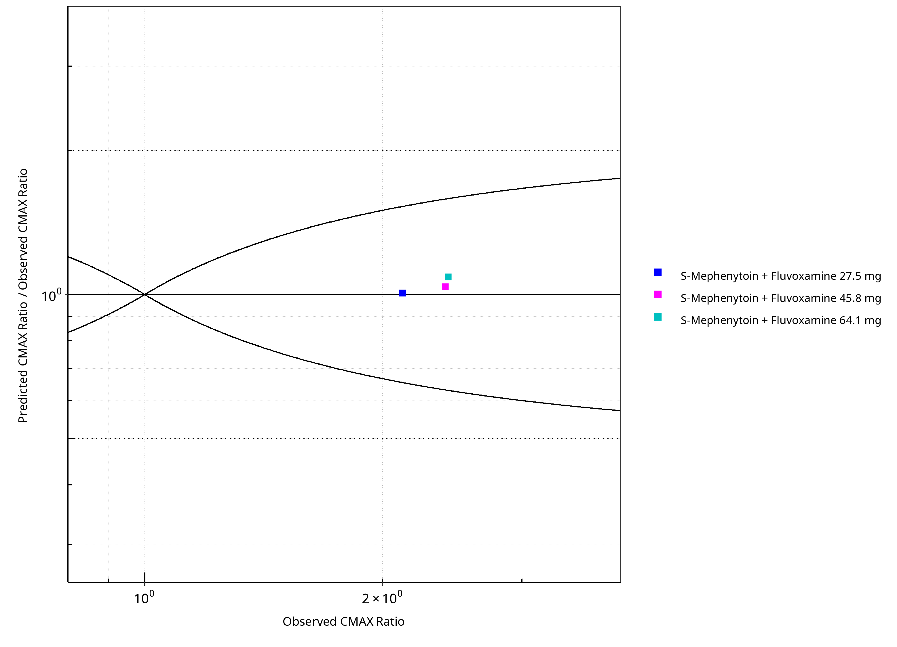
Figure 2-28: CYP2C19 DDI. Victim: S-Mephenytoin. Predicted/Observed vs. Observed CMAX Ratio. (δ = 1 in Guest et al. formula)
Table 2-20: GMFE for CYP2C19 DDI Ratio
| PK parameter | GMFE |
|---|---|
| AUC | 1.16 |
| CMAX | 1.04 |
Table 2-21: Summary table for CYP2C19 DDI - AUC Ratio. (δ = 1 in Guest et al. formula)
| AUC | Number | Ratio [%] |
|---|---|---|
| Points total | 3 | - |
| Points within Guest et al. | 3 | 100 |
| Points within 2 fold | 3 | 100 |
Table 2-22: Summary table for CYP2C19 DDI - CMAX Ratio. (δ = 1 in Guest et al. formula)
| CMAX | Number | Ratio [%] |
|---|---|---|
| Points total | 3 | - |
| Points within Guest et al. | 3 | 100 |
| Points within 2 fold | 3 | 100 |
3 Concentration-Time Profiles¶
The following section shows concentration time profiles of the victim drugs of the simulated DDI studies in comparison to observed data.
3.1 Omeprazole - Moclobemide DDI¶
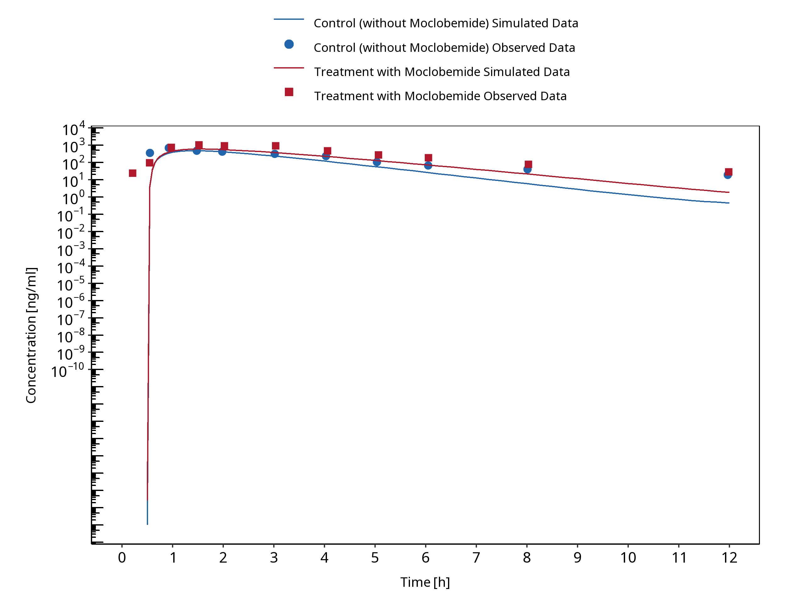
Figure 3-1: Cho 2002 (Omeprazole 40 mg po) Asian EM
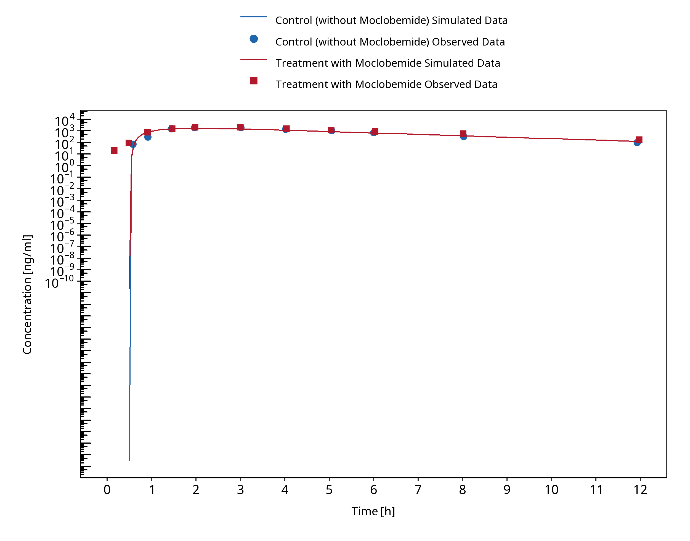
Figure 3-2: Cho 2002 (Omeprazole 40 mg po) Asian PM
3.2 Omeprazole - Fluvoxamine DDI¶
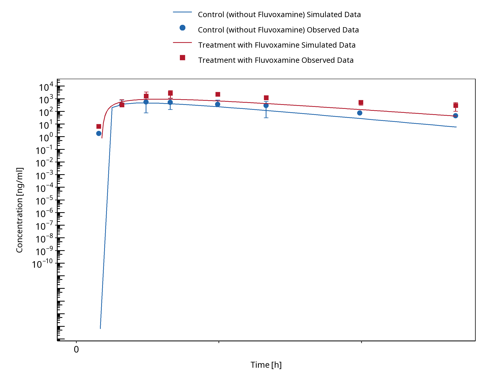
Figure 3-3: Yasui-Furukori 2004 (Omeprazole 40 mg po) Asian EM
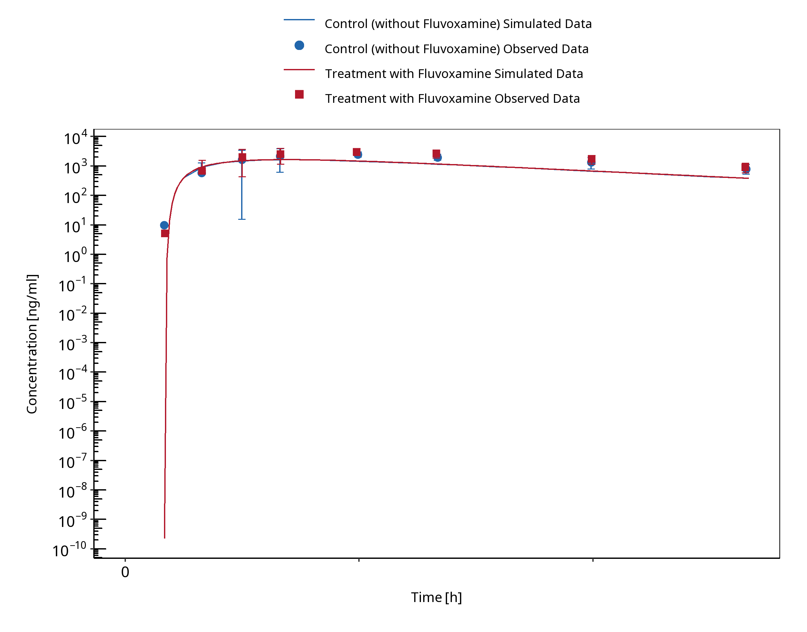
Figure 3-4: Yasui-Furukori 2004 (Omeprazole 40 mg po) Asian PM
3.3 S-Mephenytoin - Fluvoxamine DDI¶
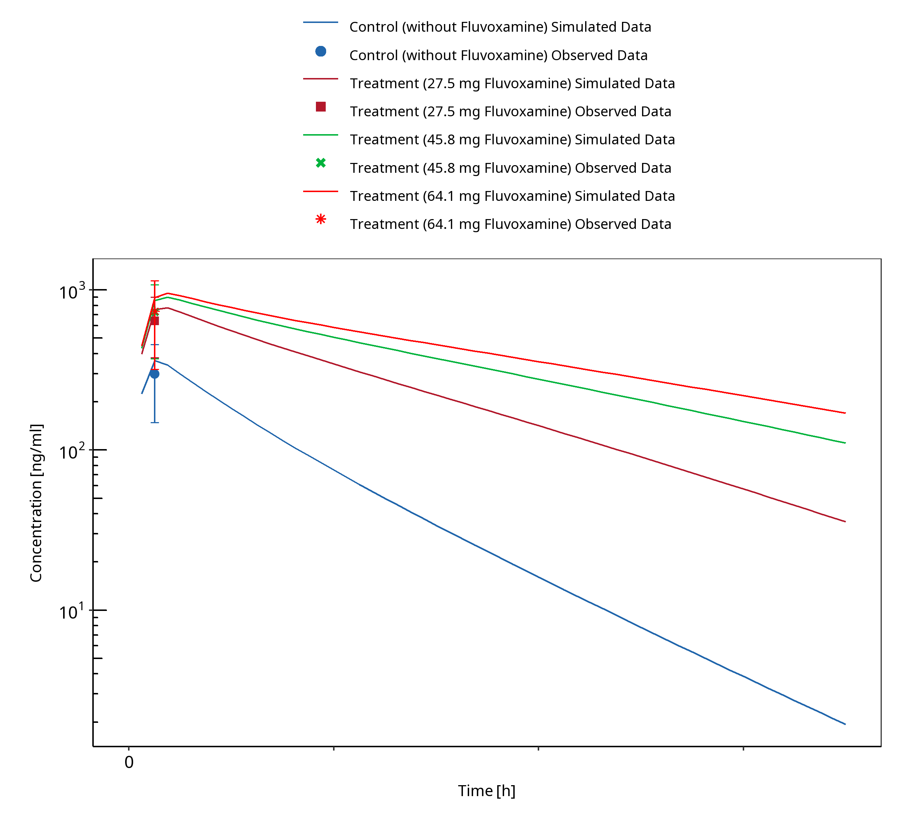
Figure 3-5: Yao 2003 (S-Mephenytoin 100 mg po)
3.4 Moclobemide - Omeprazole DDI¶
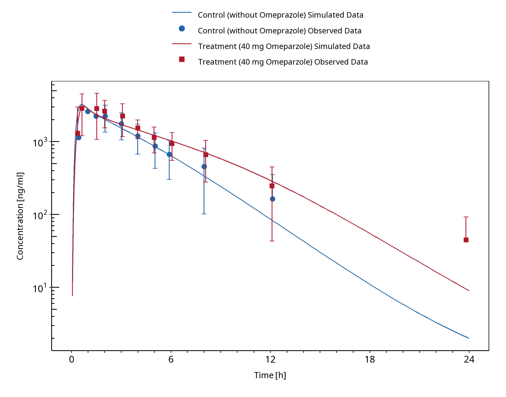
Figure 3-6: Yu 2001 (Moclobemide 300 mg po)
4 Conclusion¶
The predicted perpetrator/victim drug concentration-time profiles, DDI AUC and Cmax ratios confirmed that the developed PBPK models are well suited to characterize the CYP2C19 DDI network over the full range of reported DDI studies. Identical Ki values could be used for the moderate CYP2C19 inhibitors and substrates moclobemide (204 μM) and omeprazole (R: 5.3 μM / S: 3.1 μM) in their dynamic DDI interactions. For the strong inhibition of CYP2C19 by fluvoxamine, substrate dependent Ki values were used: 3100 nM and 2.6 nM for Omeprazole and S-mephenytoin, respectively.
Fluvoxamine
- CYP2C19 inhibition:
- DDI simulations with omeprazole as substrate demonstrate an excellent prediction (ratio pred/obs = around 1) of the inhibitory potential of fluvoxamine on CYP2C19 for both EM and PM for CYP2C19.
- DDI simulations with s-Mephenytoin as substrate demonstrate an excellent prediction (ratio pred/obs = around 1 and within 2-fold) of the inhibitory potential of fluvoxamine on CYP2C19. However, DDI predictions tend to get slightly overpredicted for higher fluvoxamine doses.
Omeprazole
-
Perpetrator:
-
DDI simulations with omeprazole as inhibitor of CYP2C19 demonstrated a good prediction of moclobemide levels (within 2-fold).
-
Substrate:
-
DDI simulations with fluvoxamine as inhibitor of omeprazole demonstrated an excellent prediction of omeprazole levels on CYP2C19 for both PM and EM (ratio pred/obs = around 1 and within 2-fold). Despite some model underprediction in both treatment and control groups, the predicted AUC and Cmax ratios well match the observed ones.
- DDI simulations with moclobemide as inhibitor of omeprazole demonstrated good prediction of omeprazole levels on CYP2C19. The levels for EM were slightly underpredicted (pred/obs CmaxR = 0.77). Predictions for PM were excellent.
S-Mephenytoin
- Substrate: DDI simulations with S-mephenytoin as a substrate demonstrate an excellent prediction (ratio pred/obs = around 1 and within 2-fold) of the inhibitory potential of fluvoxamine on CYP2C19. However, DDI predictions tend to get slightly overpredicted for Cmax with higher fluvoxamine doses.
Moclobemide
- Perpetrator: DDI simulations with moclobemide as inhibitor of omeprazole demonstrated good prediction of omeprazole levels for different CYP2C19 phenotypes. The levels for EM were slightly underpredicted. Predictions for PM were excellent.
- Substrate: DDI simulations with omeprazole as inhibitor of moclobemide demonstrated a good prediction of moclobemide levels.
5 References¶
Bertilsson 1995 Bertilsson, L. (1995). Geographical / Interracial Differences/interracial differences in Current State of Knowledge of Cytochromes P450 ( CYP ). Clin Pharmacokinet Concepts. 1995;polymorphic drug oxidation. Clinical pharmacokinetics, 29(3):), 192-209.
Cho 2002 Cho JY, Yu KS, Jang IJ, Yang BH, Shin SG, Yim DS. Omeprazole hydroxylation is inhibited by a single dose of moclobemide in homozygotic em genotype for CYP2C19. Br J Clin Pharmacol. 2002;53(4):393-397.
Desta 2002 Desta Z, Zhao X, Shin JG, Flockhart DA. Clinical significance of the cytochrome P450 2C19 genetic polymorphism. Clin Pharmacokinet. 2002;41(12):913-58. doi: 10.2165/00003088-200241120-00002. PMID: 12222994.
FDA U.S. Food and Drug Administration. Drug development and drug interactions: table of substrates, inhibitors and inducers. Website: https://www.fda.gov/drugs/drug-interactions-labeling/drug-development-and-drug-interactions-table-substrates-inhibitors-and-inducers (2020). Accessed 06 May 2022.
Goldstein 2001 Goldstein JA. (2001). Clinical relevance of genetic polymorphisms in the human CYP2C subfamily. Br J Clin Pharmacol. 2001;British journal of clinical pharmacology, 52(4):), 349-355.
Guest 2011 Guest EJ, Aarons L, Houston JB, Rostami-Hodjegan A, Galetin A. Critique of the two-fold measure of prediction success for ratios: application for the assessment of drug-drug interactions. Drug Metab Dispos. 2011 Feb;39(2):170-3.
Iga 2016 Iga K. Dynamic and Static Simulations of Fluvoxamine-Perpetrated Drug-Drug Interactions Using Multiple Cytochrome P450 Inhibition Modeling, and Determination of Perpetrator-Specific CYP Isoform Inhibition Constants and Fractional CYP Isoform Contributions to Vic. J Pharm Sci.Victim Clearance. Journal of Pharmaceutical Sciences. 2016 Mar;105(3):1307-1317–17.
Liu 2005 Liu KH, Kim MJ, Shon JH, et al. Stereoselective inhibition of cytochrome P450 forms by lansoprazole and omeprazole in vitro. Xenobiotica. 2005;35(1):27-38
Wu 2014 Wu F, Gaohua L, Zhao P, Jamei M, Huang S-M, Bashaw ED, et al. Predicting Nonlinear Pharmacokinetics of Omeprazole Enantiomers and Racemic Drug Using Physiologically Based Pharmacokinetic Modeling and Simulation: Application to Predict Drug/Genetic Interactions. Pharmaceutical Research. 2014 Aug;31(8):1919–29.
Yao 2003 Yao C, Kunze KL, Trager WF, Kharasch ED, Levy RH. Comparison of in vitro and in vivo inhibition potencies of fluvoxamine toward CYP2C19. Drug Metab Dispos. 2003;31(5):565-571.
Yasui-Furukori 2004 Yasui-Furukori N, Takahata T, Nakagami T, et al. Different inhibitory effect of fluvoxamine on omeprazole metabolism between CYP2C19 genotypes. Br J Clin Pharmacol. 2004;57(4):487-494.
Yu 2001 Yu K, Yim DS, Cho J-Y, Park SS. Effect of omeprazole on the pharmacokinetics of moclobemide according to the genetic polymorphism of CYP2C19. Clinical Pharmacology & Therapeutics. 2001 Apr;69(4):266–73.
6 Appendix¶
6.1 Open Systems Pharmacology Suite (OSPS) Introduction¶
Open Systems Pharmacology Suite (OSP suite) is a tool for PBPK modeling and simulation of drugs in laboratory animals and humans. PK-Sim® and MoBi® are part of the OSP suite [1]. PK-Sim® is based on a generic PBPK-model with 18 organs and tissues. One of the main assumptions is that all compartments are well-stirred. Represented organs/tissues include arterial and venous blood, adipose tissue (separable adipose, excluding yellow marrow), brain, lung, bone (including yellow marrow), gonads, heart, kidneys, large intestine, liver, muscle, portal vein, pancreas, skin, small intestine, spleen and stomach, as shown in Figure Appendix-1.
Each organ consists of four sub-compartments namely the plasma, blood cells (which together build the vascular space), interstitial space, and cellular space. Distribution between the plasma and blood cells as well as between the interstitial and cellular compartments can be permeability-limited. In the brain, the permeation barrier is located between the vascular and the interstitial space. PK-Sim® estimates model parameters (intestinal permeability [2] organ partition coefficients (tissue-to-plasma partition coefficients) [3,4], and permeabilities) from physico-chemical properties of compounds (molecular weight, pKa, acid/base properties) and the composition of each tissue compartment (lipids, water and proteins). Partition coefficients can be calculated using a variety of methods available in PK-Sim®, for example the internal PK-Sim® method [3,4] or that of Rodgers and Rowland [5-7].
Physiological databases included in the software incorporate the dependencies of organ composition, organ weights, organ blood flows and gastrointestinal parameters (gastrointestinal length, radius of each section, intestinal surface area, gastrointestinal transit times, and pH in different intestinal segments [2]), with the user-defined body weight and height and ethnicity of the individual [8]. Thereby, PK Sim® allows generating realistic virtual populations. For a detailed description of the PBPK model structure implemented in PK Sim®, see Willmann et al. [2,4,8,9] or the OSP Suite homepage (https://docs.open-systems-pharmacology.org/mechanistic-modeling-of-pharmacokinetics-and-dynamics/modeling-concepts).

Figure Appendix-1: Structure of the Whole Body PBPK Model integrated in PK-Sim®
References for OSPS introduction¶
[1] www.open-systems-pharmacology.org
6.2 Mathematical Implementation of Drug-Drug Interactions¶
DDI modeling: Competitive inhibition
A detailed representation of the mathematical implementation of competitive enzyme inhibition can be found in the OSP manual (https://docs.open-systems-pharmacology.org/working-with-pk-sim/pk-sim-documentation/pk-sim-compounds-defining-inhibition-induction-processes#competitive-inhibition-simple-setting-with-one-inhibitor).
DDI modeling: Mechanism-based inhibition
A detailed representation of the mathematical implementation of mechanism-based enzyme inhibition can be found in the OSP manual (https://docs.open-systems-pharmacology.org/working-with-pk-sim/pk-sim-documentation/pk-sim-compounds-defining-inhibition-induction-processes#irreversible-inhibition).
DDI modeling: Induction
A detailed representation of the mathematical implementation of enzyme induction can be found in the OSP manual (https://docs.open-systems-pharmacology.org/working-with-pk-sim/pk-sim-documentation/pk-sim-compounds-defining-inhibition-induction-processes#enzyme-induction).
6.3 Automatic (re)-qualification workflow¶
Open Systems Pharmacology (https://www.open-systems-pharmacology.org/) provides a dynamic landscape of model repositories and a database of observed clinical data. Additionally, a technical framework to assess confidence of a specific intended use has been developed (qualification runner and reporting engine). This framework allows for an automatic (re)-qualification workflow of the OSP suite, comprising the following steps Figure Appendix-2:
-
PBPK model development and verification with observed data,
-
Qualification plan generation,
-
Qualification plan execution,
-
Qualification report generation.
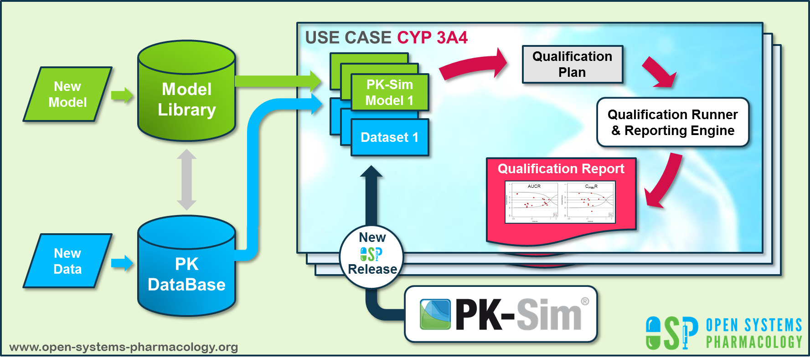
Figure Appendix-2: OSP suite automatic (re)-qualification workflow
In a first step, the respective qualification scenario is saved in a special qualification repository on OSP GitHub (https://github.com/Open-Systems-Pharmacology/). This qualification scenario repository contains a detailed qualification plan that links and combines respective models and data to address the use case that shall be qualified. Therefore, the qualification plan consists of:
- PK-Sim project files,
- Additional model building steps (if applicable),
- Description of potential cross-dependencies between PK-Sim project files (if applicable),
- Observed data (needed for model development and verification),
- Qualification scenario description text modules
- Detailed report settings to describe the generation of charts and qualification measures.
PK-Sim projects, observed data sets, and qualification scenario text modules are deposited in distinct repositories and are referenced by the qualification plan (Figure Appendix-3).

Figure Appendix-3: Qualification scenario repository landscape on GitHub
In a second step the qualification runner (https://github.com/Open-Systems-Pharmacology/QualificationRunner) processes the qualification plan, i.e. all project parts are exported and prepared for the reporting engine (https://github.com/Open-Systems-Pharmacology/Reporting-Engine). The reporting engine provides a validated environment (implemented in R) for model execution and finally generates the qualification report. This report contains the evaluation of the individual PBPK models with observed data (i.e. standard goodness of fit plots, visual predictive checks) and a comprehensive qualification of the specific use case assessing the predictive performance of the OSP suite by means of a predefined set of qualification measures and charts.
The automated execution of the described workflow can be triggered to assess re-qualification in case new data, changes in model structure or parameterization, or new OSP suite releases arise.
7 Glossary¶
| ADME | Absorption, Distribution, Metabolism, Excretion |
|---|---|
| AUC | Area under the plasma concentration versus time curve |
| AUCinf | AUC until infinity |
| AUClast | AUC until last measurable sample |
| AUCR | Area under the plasma concentration versus time curve Ratio |
| b.i.d. | Twice daily (bis in diem) |
| CL | Clearance |
| Clint | Intrinsic liver clearance |
| Cmax | Maximum concentration |
| CmaxR | Maximum concentration Ratio |
| CYP | Cytochrome P450 oxidase |
| CYP1A2 | Cytochrome P450 1A2 oxidase |
| CYP2C19 | Cytochrome P450 2C19 oxidase |
| CYP3A4 | Cytochrome P450 3A4 oxidase |
| DDI | Drug-drug interaction |
| e.c. | Enteric coated |
| EE | Ethinylestradiol |
| EM | Extensive metabolizers |
| fm | Fraction metabolized |
| FMO | Flavin-containing monooxygenase |
| fu | Fraction unbound |
| FDA | Food and Drug administration |
| GFR | Glomerular filtration rate |
| HLM | Human liver microsomes |
| hm | homozygous |
| ht | heterozygous |
| IM | Intermediate metabolizers |
| i.v. | Intravenous |
| IVIVE | In Vitro to In Vivo Extrapolation |
| Ka | Absorption rate constant |
| kcat | Catalyst rate constant |
| Ki | Inhibitor constant |
| Kinact | Rate of enzyme inactivation |
| Km | Michaelis Menten constant |
| m.d. | Multiple dose |
| OSP | Open Systems Pharmacology |
| PBPK | Physiologically-based pharmacokinetics |
| PK | Pharmacokinetics |
| PI | Parameter identification |
| PM | Poor metabolizers |
| RT-PCR | Reverse transcription polymerase chain reaction |
| p.o. | Per os |
| q.d. | Once daily (quaque diem) |
| SD | Single Dose |
| SE | Standard error |
| s.d.SPC | Single dose Summary of Product Characteristics |
| SD | Standard deviation |
| TDI | Time dependent inhibition |
| t.i.d | Three times a day (ter in die) |
| UGT | Uridine 5'-diphospho-glucuronosyltransferase |
| UM | Ultra-rapid metabolizers |
Related Reports¶
Other Drug-Drug Interaction (DDI) qualification reports: